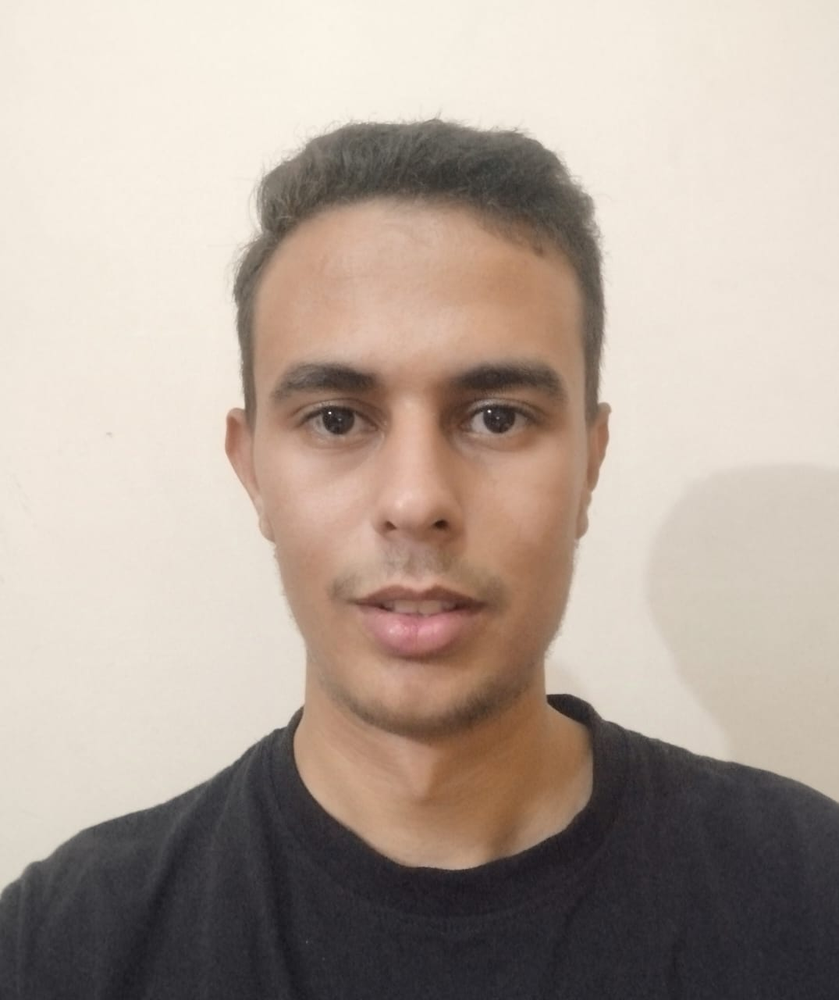

Informations personnelles
Nom : ES-SAAIDI Youssef
Adresse : TISSA TAOUNATE
Age : 20 ans
État civil : Célibataire
Email : youssefessaaidi281@egmail.com
Téléphone : +212 699646778
Formation
- Diplôme : Diplôme d'ingénieur en intelligence artificielle et technologie des données (en cours)
- Établissement : École Nationale Supérieure d'Arts et Métiers de Meknès (ENSAM)
- Année : 1 er Année cycle d'ingènieur
Projets académiques
- Projet 1 : Robot suiveur de ligne avec Arduino
- Description : Conception d'un robot capable de suivre une ligne tracée au sol en utilisant des capteurs infrarouges pour détecter le contraste entre la ligne et le sol.
- Technologies utilisées : Arduino, capteurs infrarouges, moteurs à courant continu, C/C++
- Résultat : Développement d'un robot fonctionnel capable de suivre une trajectoire de manière autonome en temps réel.
- Projet 2 : Système de détection d'images avec Raspberry Pi
- Description : Implémentation d'un système de traitement d'images en temps réel avec Raspberry Pi, permettant la capture et l'analyse d'images pour détecter et classifier des objets.
- Technologies utilisées : Raspberry Pi, Python, OpenCV, caméra
- Résultat : Réalisation d'un prototype de détection d'objets avec des applications potentielles dans la surveillance automatisée.
Compétences techniques
- Langages de programmation : C, C++, Python, R, Julia, HTML, MATLAB
- Outils et technologies : Microsoft Office, Arduino, Raspberry Pi
- Capteurs : Capteurs infrarouges, capteurs de température, capteurs de mouvement, etc.
Langues
- Français - Avancé
- Anglais - Courant
Centres d'intérêt
- Technologie et innovation
- Robotique
- Intelligence artificielle
- Développement durable
- Sports (football, basket-ball)
- Lecture et culture scientifique
- Voyages